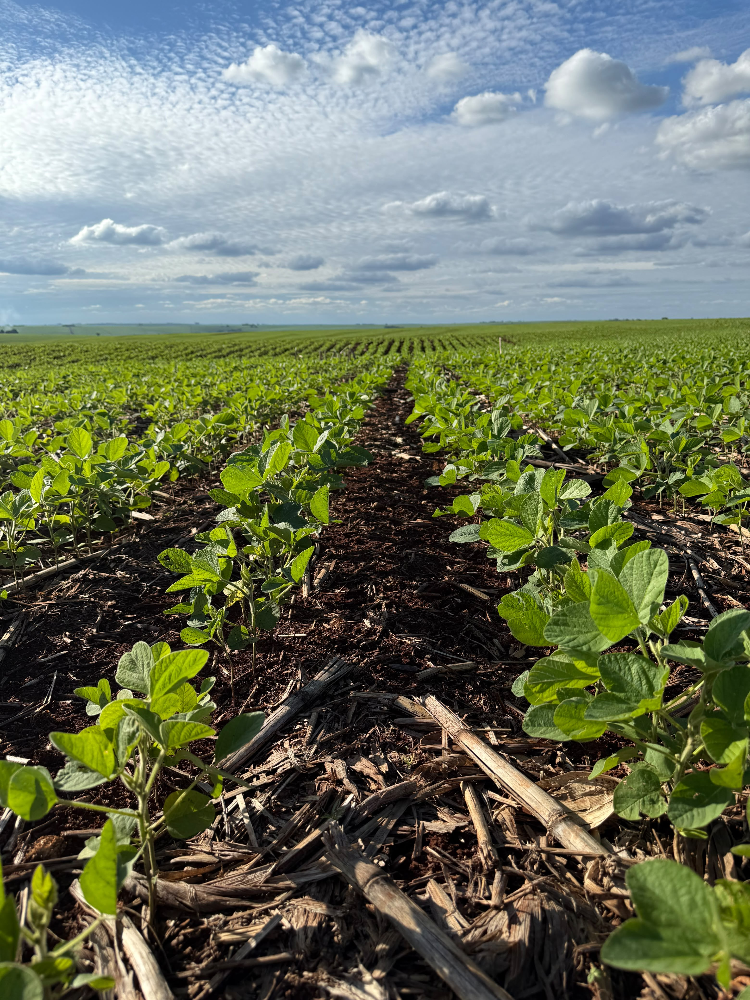

O Futuro do Campo é Sustentável
Produzir com excelência, cuidar com responsabilidade. Acreditamos que a força do agronegócio está no equilíbrio perfeito entre a alta produtividade e a preservação do meio ambiente. Construímos hoje o amanhã da nossa terra.
Nossa missão é alimentar o mundo sem esgotar os recursos do planeta. Unimos tecnologia de ponta, práticas agrícolas conscientes e o respeito à biodiversidade para provar que o desenvolvimento econômico e a conservação ambiental caminham lado a lado.